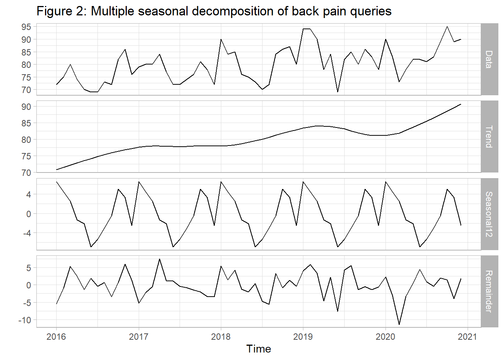

#Preliminaries:
knitr::opts_chunk$set(message=FALSE, warning=FALSE)
rm(list=ls())
library(tidyverse)
library(lubridate)
library(viridis)
library(gtrendsR)
library(forecast)
library(jtools)
library(sandwich)
theme_set(theme_light())Back pain is a common issue across the globe, increasing due to an ageing population and little physical exercise (the latter is usually considered a good ingredient to improve the situation). However, from 2020 onward, exercise decreased strongly due to policies to mitigate the Covid-19 pandemic. Hence, a natural question is whether political lockdown had a negative influence on the prevalence of back pain. One potential mechanism could be higher number of people working from home. But how to detect changes in back pain over time? One way to approach this is to use Google Trends, as it provides quasi instant access to aggregated queries from Google users. Hoerger et al. (2020), Knipe et al. (2020) and Brodeur et al. (2021) use Google Trends to assess the impact of the pandemic on mental health/well being. Szilagyi et al. (2021) compare queries for back pain, before and after the pandemic. Seasonality of back pain in Italy was analyzed by Ciaffi et al. (2021). But can health issues really be traced back to the Covid-19 pandemic, and how?
Let’s figure out the relative amount internet users were looking for back pain related keywords from 2016 onwards. We look at queries from Germany, and assume that the back pain synonyms ‘Rückenschmerzen,’ ‘Rücken Schmerzen,’ ‘Rückenschmerz,’ ‘Rücken Schmerz,’ reflect overall interest in this topic, as a proxy for the associated burden of disease over time. Data is provided on a monthly level.
#trends <- gtrends(keyword = c("Schmerz Rücken + Rückenschmerz + Schmerzen Rücken + Rückenschmerzen"), time = '2016-01-01 2021-09-30', geo="DE")
#write_rds(trends, "trends_ruecken20211009.rds")
trends <- read_rds("trends_ruecken20211009.rds")
#transform important variables
trends$interest_over_time <- trends$interest_over_time %>%
mutate(date=as.Date(date))
#Visualize Backpain over time
trends$interest_over_time %>%
ggplot() +
geom_line(aes(x=date, y=hits), color = "darkred") +
geom_smooth(aes(x=date, y=hits)) +
theme_minimal() +
scale_colour_viridis_d(option="viridis") +
labs(y="relative amount of queries", x="year", title="Figure 1: Queries for back pain over time")We see that the relative number of queries are increasing steadily over time, ie there is a positive time trend. In order to better understand the data structure let’s decompose, trend, seasonality and error (using just complete 12 year periods):
#create time series:
ts_in <- trends$interest_over_time %>%
filter(date>= '2016-01-01' & date<= '2020-12-31') %>%
mutate(Jahr=year(date)) %>%
select(hits) %>%
pull()
back_ts <- ts(ts_in, start = c(2016, 1), frequency = 12)
dcp <- mstl(back_ts, s.window="periodic")
autoplot(dcp) +
labs(title="Figure 2: Multiple seasonal decomposition of back pain queries")
A monthly seasonal pattern can be seen which we should keep in mind when analyzing the relation of the pandemic with back pain. Due to the time structure of our data also autocorrelation is a potential issue we should we aware of.
ggPacf(back_ts, main="Figure 3: Partial autocorrelation plot (back pain queries)")A strong partial autocorrelation with the first monthly lag can be seen which should be taken into account as well. Let us put together what we have learned so far, in order to assess whether the Covid-19 period is statistically associated with Google-queries for back pain. We do so by fitting an interrupted times series model, assuming a counterfactual situation by imposing a linear time trend in our model. We also add dummy variables for each month to capture the seasonality of queries for back pain, as discussed above. The dependent variable ‘hits’ reflects the relative amount of queries for backpain over time, and is considered in logarithmic form. Concerning out treatment variable it is very likely that it takes some time after reduced exercise induces bodily problems. Hence we use a categorical treatment variable, capturing first 6 months, 7-12 months or > 12 months after the start of Germany’s first lockdown (2020-3-16). The time range before reflects our control group. The autocorrelated residuals are accounted for by using Newey-West standard errors.
data_impact <- trends$interest_over_time %>%
arrange(date) %>%
mutate(trend=row_number()-1, covid=case_when(date>=(as.Date('2020-03-16')+365) ~ "12months", date>=(as.Date('2020-03-16')+365/2) ~ "6months", date>='2020-03-16' ~ "0months" , TRUE ~ "before"), covid=factor(covid, levels=(c("before", "0months", "6months", "12months"))), month=as.factor(month(date)), hits_l1=lag(hits))
lm_out <- lm(log(hits) ~ trend +month + covid , data=data_impact)
ipct_out <- round(exp(lm_out$coefficients["covid12months"])*100-100, 0)
summ(lm_out, vcov=NeweyWest(lm_out, lag=1, prewhite=FALSE, adjust=TRUE), digits = 3) | Observations | 69 |
| Dependent variable | log(hits) |
| Type | OLS linear regression |
| F(15,53) | 8.462 |
| R² | 0.705 |
| Adj. R² | 0.622 |
| Est. | S.E. | t val. | p | |
|---|---|---|---|---|
| (Intercept) | 4.382 | 0.037 | 117.354 | 0.000 |
| trend | 0.002 | 0.001 | 3.179 | 0.002 |
| month2 | -0.029 | 0.031 | -0.956 | 0.343 |
| month3 | -0.042 | 0.045 | -0.930 | 0.357 |
| month4 | -0.104 | 0.042 | -2.493 | 0.016 |
| month5 | -0.109 | 0.036 | -3.043 | 0.004 |
| month6 | -0.161 | 0.036 | -4.518 | 0.000 |
| month7 | -0.139 | 0.037 | -3.806 | 0.000 |
| month8 | -0.096 | 0.039 | -2.423 | 0.019 |
| month9 | -0.081 | 0.035 | -2.311 | 0.025 |
| month10 | -0.010 | 0.030 | -0.348 | 0.729 |
| month11 | -0.029 | 0.038 | -0.754 | 0.454 |
| month12 | -0.099 | 0.037 | -2.649 | 0.011 |
| covid0months | 0.023 | 0.027 | 0.860 | 0.394 |
| covid6months | 0.029 | 0.033 | 0.879 | 0.383 |
| covid12months | 0.089 | 0.039 | 2.266 | 0.028 |
| Standard errors: User-specified |
Our regression shows that the Covid-19 time period, is indeed associated with a higher share of queries for back pain, given a linear time trend and month-flags. Compared to the baseline we find an steady increase of relative queries from the beginning of the lockdown onward. However, it can be seen that the impact is just statistically significant after the first 12 months (around 9 percent). So we have learned that although people were saved concerning a Covid-19 infection, there seem to be negative external effects on other health outcomes (in addition to the psychological and economic burden).
Overall we have found a substantial increase in the relative interest in back pain based on online queries using Google Trends. What can be done? From a policy perspective it is clear that there need to be enough supply of health care provision in order for sufficient treatment, mitigate pain and avoidance of chronic disease. Another important aspect of such treatment often is self awareness of a person with back pain, to successfully figure out what he or she needs and when and what exercise to do. Here, in addition to professional help, internet can help to fast access information in order to relieve ones pain, given high quality information is provided.
One thing we have to keep in mind, is that Google Trends reflects the importance of queries, relative to all queries at a point in time at a specific location. It is obvious that the overall internet queries increased strongly in 2020. However, it is hard to imagine a scenario, how an increased internet usage would systematically bias above findings.